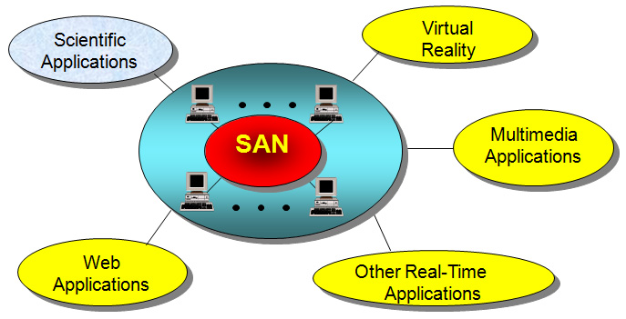

High Performance and Energy Efficient Cluster Interconnect Design
High Performance Computing Laboratory
Performance analysis of a QoS capable cluster interconnect
The growing use of clusters in diverse applications, many of which have real-time constraints, requires
quality-of-service (QoS) support from the underlying cluster interconnect. All prior studies on QoS-aware cluster
routers/networks have used simulation for performance evaluation. In this work,
we present an analytical model for a wormhole-switched router with QoS provisioning.
In particular, the model captures message blocking due
to wormhole switching in a pipelined router, and bandwidth sharing due to a rate-based scheduling mechanism,
called VirtualClock. Then we extend the model to a hypercube-style cluster network. Average message latency
for different traffic classes and deadline missing probability for real-time applications are computed using the model.
We evaluate a 16-port router and hypercubes of different dimensions with a mixed workload of real-time
and best-effort (BE) traffic. Comparison with the simulation results shows that the single router and the network
models are quite accurate in providing the performance estimates, and thus can be used as efficient design tools.
|
Cluser Interconnect Design
|
|

|
Performance Enhancement Techniques for InfiniBand Architecture
InfiniBand Architecture (IBA) is envisioned to be the
default communication fabric for system area networks
(SANs). However, the released IBA specification outlines
only higher level functionalities, leaving it open for
exploring various design alternatives. In this work, we
investigate four co-related techniques to provide high and
predictable performance in IBA. These are: (i) using the
Shortest Path First (SPF) algorithm for deterministic packet
routing; (ii) developing a multipath routing mechanism for
minimizing congestion; (iii) developing a selective packet
dropping scheme to handle deadlock and congestion; and
(iv) providing multicasting support for customized applications.
These designs are evaluated using an integrated
workload on a versatile IBA simulation testbed.
Simulation results indicate that the SPF routing, multipath
routing, packet dropping, and multicasting schemes
are quite effective in delivering high and assured performance
in clusters. One of the major contributions of this
research is the IBA simulation testbed, which is an essential
tool to evaluate various design tradeoffs.
|
Infiniband Architecture
|
|

|
Energy-Efficient Cluster Interconnects
Designing energy-efficient clusters has
recently become an important concern to make these
systems economically attractive for many applications.
Since the cluster interconnect is a major part of
the system, the focus of this work is to characterize
and optimize the energy consumption in the entire
interconnect.
Using a cycle-accurate simulator of an InfiniBand
Architecture (IBA) compliant interconnect fabric and
actual designs of its components, we investigate
the energy behavior on regular and irregular interconnects.
The energy profile of the three major
components (switches, network interface cards
(NICs), and links) reveals that the links and switch
buffers consume the major portion of the power
budget. Hence, we focus on energy optimization
of these two components. To minimize power in
the links, first we investigate the dynamic voltage
scaling (DVS) algorithm and then propose a novel
dynamic link shutdown (DLS) technique. The DLS
technique makes use of an appropriate adaptive
routing algorithm to shutdown the links intelligently.
We also present an optimized buffer design for
reducing leakage energy in 70nm technology. Our
analysis on different networks reveals that while DVS
is an effective energy conservation technique, it incurs
significant performance penalty at low to medium
workload. Moreover, energy saving with DVS reduces
as the buffer leakage current becomes significant with
70nm design.On the other hand, the proposed DLS
technique can provide optimized performance-energy
behavior (up to 40% energy savings with less than
5% performance degradation in the best case) for
the cluster interconnects.
Papers
- K. H. Yum, Y. Jin, E. J. Kim, and C. R. Das, "Integration of Admission, Congestion, and Peak Power Control in QoS-Aware Clusters," to appear in The Journal of Parallel and Distributed Computing (JPDC).
- E. J. Kim, K. H. Yum, C. R. Das, M. Yousif, and J. Duato, "Exploring IBA Design Space for Improved Performance," IEEE Transactions on Parallel and Distributed Systems (TPDS), Vol. 18, No. 4, pp. 498-510, April 2007 (pdf).
-
E. J. Kim, G. M. Link, K. H. Yum, V. Narayanan, M. Kandemir, M. J. Irwin, C. R. Das, "A Holistic Approach to Designing Energy-Efficient Cluster Interconnets," IEEE Transactions on Computers, Vol. 54, No. 6, pp. 660-671, June 2005. (pdf)
-
E. J. Kim, K. H. Yum, and C. R. Das, "Performance Analysis of a QoS Capable Cluster Interconnect," Performance Evaluation, Volume 60, Issues 1-4, pp. 275-302, May 2005. (pdf)
|